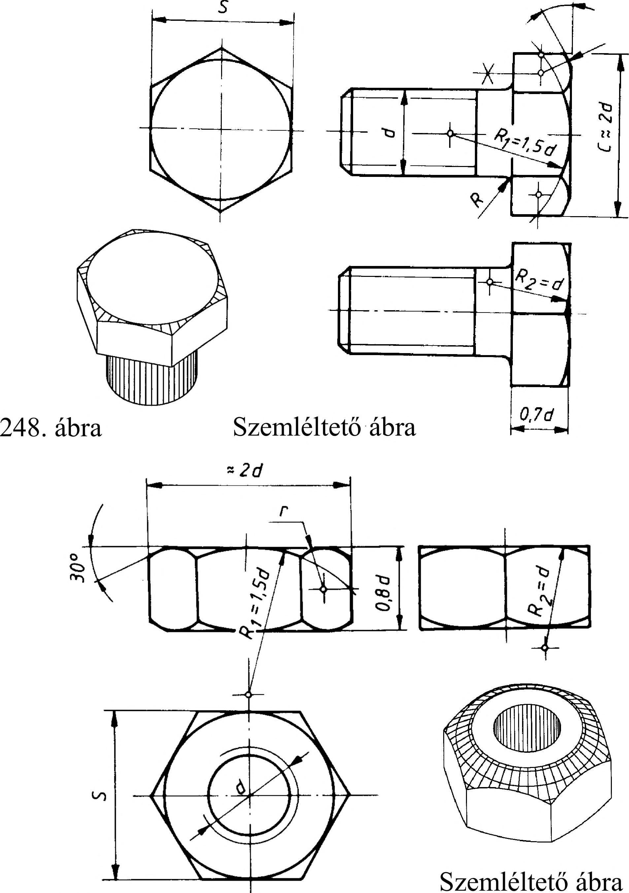

13. Csavarok, csavarkötések 13.6. Hatlapú kötőelemek rajza A gyakorlatban a legáltalánosabb a hatlapfejű csavarok használata. Ezek ábrázolását (szerkesztését) a 248. ábra szemlélteti. Ha a csavarorsó átmérője (d) ismert, akkor a többi adat számítható: a csavarfej magassága 0,7d, a csúcstávolság 02d, a laptávolság S 0,86^d. A csavarfejen a 120°-os éltompítás a valóságban hiperbolaíveket hoz létre, amelyeket körívekkel helyettesítünk. Az ábrából a szerkesztési méretek és a szerkesztés menete leolvasható. A hatlapú anya ábrázolását (szerkesztését), a 249. ábra szemlélteti. A csavarfejtől eltérően, a csavaranyát mindkét oldalon 120°-os éltompítással gyártják. Ennek megfelelően a hiperbolaíveket helyettesítő köríveket a csavaranya mindkét oldalán meg kell rajzolni. Az ábráról a szerkesztési méretek leolvashatók. 13.7. Csavarvégződések Az ipar számos területén igen sokféle csavart, csavaranyát alátétet és csavarvégződést használunk. A szabványos csavarvégződések alakjára és megnevezésére mutat rajzi példát a 250. ábra. 13.8. Csavarmenet egyszerűsített ábrázolása Ez az ábrázolás elsősorban a kis méretarányban rajzolt alkatrészek rajzain, vagy a zsúfolt, sok méretvonallal ellátott rajzokon alkalmazható. Az ilyen jellegű egyszerűsítés során az a fontos, hogy az alkatrész menetes furata egyértelműen meghatározott legyen. 13.8.1. Menetes furat egyszerűsített ábrázolása A menetes furat mind metszetben, mind nézetben megadható a furat középpontjától kiinduló mutató vonalon. További egyszerűsítés, hogy a furat rajzolása helyettesíthető egyszerűen a menetes furat középpontjának jelölésével: vékonyvonalú kereszttel (251. ábra). A méretmegadásról tanultak szerint a mutatóvonalon megadható a menetes furat többi szükséges méret- és tűrésadata is (pl. M12 x 1 LH-6H). Zsákfúratok méretmegadásakor a menet méret adata után x jellel kapcsolva a hasznos menethossz, ezt követően kötőjellel a magfurat hossza adható meg. PL: M8x 1x10-12 10 hasznos menethossz 12 magfurat hossza Megadható egyszerűsítve a menetes furat süllyesztése is a menet méretadatai után törtjellel a következő módon: M2 x 8/2,8 x 90°. A törtjei után az 02,8 a süllyesztés átmérőjét, a 90° a süllyesztési szöget jelenti. 30° 249. ábra Rövid csapos végződés Kúpos csapos végződés Gömbölyű csapos végződés Tompa végződés 45°-os letöréssel ^4 2 Pmax. M12x1LH-6H M8xU10-12 13.8.2. Kötőelemek egyszerűsített ábrázolása Összeállítási és szerelési rajzon, ahol a kötőelemek (csavarok, csavaranyák) nagy számban fordulnak elő, alkalmazhatjuk a kötőelemek egyszerűsített és jelképes ábrázolását is. Ez kicsinyített rajzokon alkalmazható előnyösen (252. ábra). Megnevezés Egyszerűsített ábrázolás Jelképes ábrázolás Hatlapfejű csavar <5 r > 252. ábra 71
